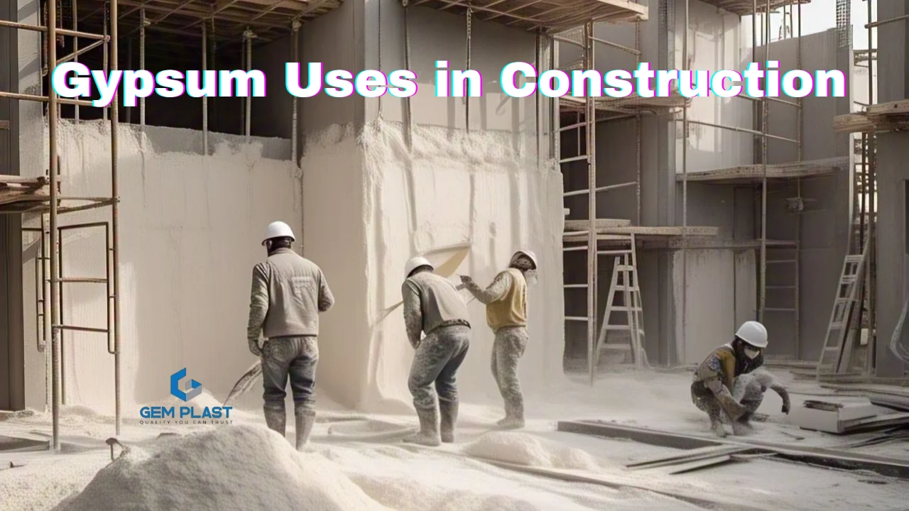
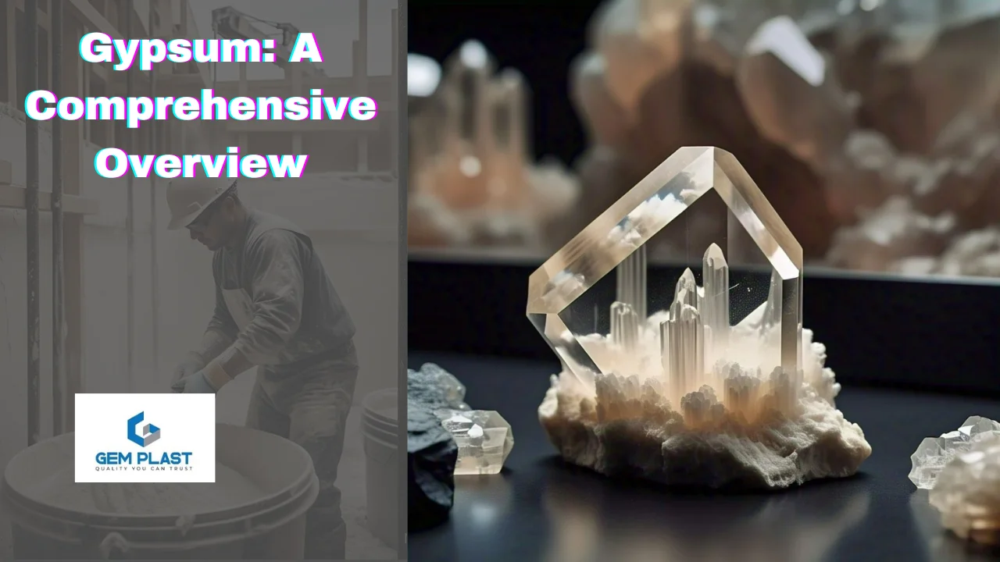
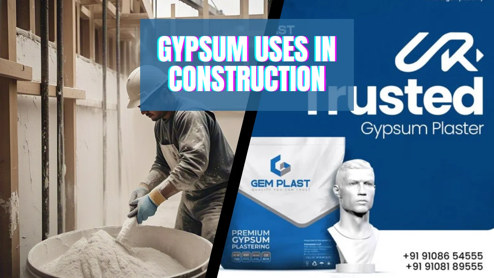
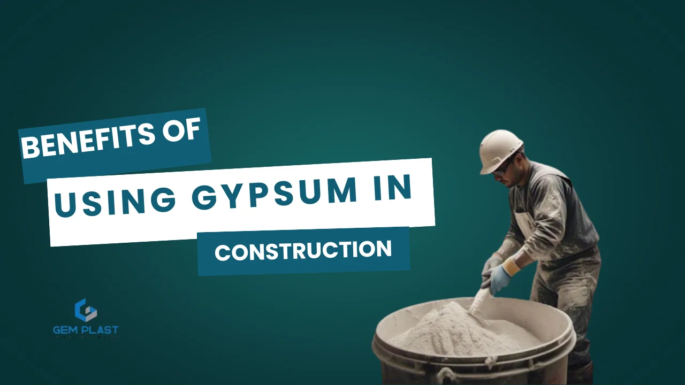
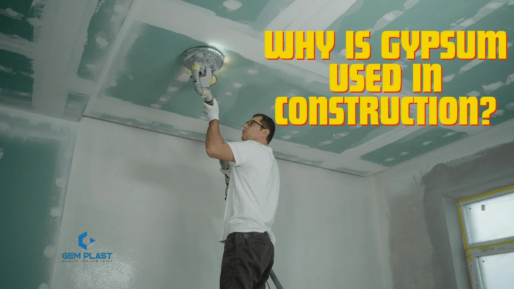

Gypsum is one of the most utilized construction materials. Gypsum Uses in Construction buildings have been adequately described, given that the material is elastic, strong, and fire-resistant. Being a naturally occurring mineral made up of calcium sulfate dihydrate, some of the Gypsum Uses in Construction are drywall plaster cement and ornaments. Its special nature qualifies it as a critical element in modern building construction. In this Gypsum Uses in Construction, we will feature the most used constructions of gypsum, Gypsum Uses in Construction benefits, and the reasons why it is a priority among contractors and architects across the world. You are either an architect, a contractor, or a homeowner who can be aided by a gypsum work application to become adequately prepared for your next construction project. At Wall plast, we desire to provide top-quality gypsum solutions that answer the rising demands of the construction sector. Wall plast is a leading provider of high-quality gypsum plastering in Kerala.
A Brief Overview Understanding Gypsum

Gypsum is the calcium dihydrate sulfurate (CaSO₄·2H₂O) mineral. Gypsum is a fire-resistant, soundproof mineral sulfate-soft and is frequently utilized since it gives strength and fire and noise resistance. Gypsum work is widely utilized in decoration and ornamentation, as well as drywall cement, and is a common material yet a contemporary technique for primary construction. Natural gypsum is a dihydrate of calcium sulfurates with the chemical composition CaSO₄·2H₂O.
Its components are calcium (Ca) as well as sulfur (S), oxygen (O), and two water molecules (H₂O), making it a hydrated mineral sulfate. Composed of water molecules and the conditions in which they were formed, they can also be found as a special mineral with characteristics that are connected to thermal insulation, fireproofing, and humidity control.
Different Gypsum Uses in Construction

The different gypsum uses in construction illustrate its final goal of providing safety, effectiveness, and sustainability. For residential houses and big or small buildings, gypsum work is a necessary ingredient today. Its adaptability allows it to be applied in numerous different ways, rendering it accountable for making buildings sturdy, lovely and durable.
1. Drywall (Plasterboard)
Drywall (or plasterboard) Drywall, also known by other names like sheetrock, gypsum boards, or plasterboard, is the most regular and prevalent use of gypsum in construction. Drywall is comprised of compressed gypsum placed between two paper-like finishes. Drywall is normally used to construct walls and ceilings of a building. Drywall offers some advantages. Therefore, it is the material of preference in commercial, residential, and industrial structures.
2. Plastering
Plaster is a type of building material consisting of gypsum work mixed with water in paste form and finally strengthened with the lapse of time. Gypsum Plastering Work consists of the installation of a smooth, hard gypsum plaster layer on walls and ceilings, giving a shiny finish that improves the beauty and usability of an area. In today’s buildings, plaster is applied chiefly to complete walls and ceilings with a smooth, hard layer that is later painted or decorated. Plastering refers to using a surface finish of plaster on walls or ceilings to provide a soft, solid, and decorative finish.
3. Exterior Insulation and Finish Systems
Exterior Insulation and Finish Systems are used most frequently for commercial and residential exterior wall claddings. The system integrates the finish, weather resistance, and insulation into a single system. Exterior Insulation and Finish Systems consists of a multi-component structure made up of an insulating foam board, base coat, reinforcing mesh, and decorative finish coat. Tips for plastering and mortar mix help increase efficiency.
4. Ceiling Tiles
Ceiling tiles are found to be extensively used in residential, commercial, and residential buildings for form and function. Based on gypsum mineral fibre and steel ceiling tiles, gypsum is the preferred one due to the fact that it is fire-resistant, soundproof, and versatile. Gypsum ceiling tiles are among the most used products in contemporary construction due to the fact that they are beautiful, functional, and durable. They are extensively used in large numbers in commercial, residential, and institutional false ceilings to create a classy and high-end appearance and hide electrical cabling, ducts, and lighting.
5. Gypsum Cement
Gypsum Cement is a speciality cement that uses the application of calcium sulfate dihydrate or gypsum as the main composition. It possesses the added benefit of being fast to set, easy to apply, and overall use in any building. Gypsum plaster and cement plaster are both used extensively for wall finishes but differ in properties that make them unique for various uses. Cement plaster, a mixture of cement, sand, and water, is resistant to water and is strong and, therefore, used on outer surfaces or moisture-sprayed surfaces. On the other hand, gypsum plaster, made up of gypsum, is softer and must be applied to inner walls.
6. Decorative Elements
Gypsum uses in construction Gypsum is vastly used in architectural design of ornamentation, home decor and ornamented features, giving a building architectural elegance and ambience. Gypsum is the best material used to design pleasing and functional decoration features. gypsum work gives refinement and elegance to an area.
7. Acoustic and Soundproofing Applications
Gypsum is also primarily employed in acoustic insulation and soundproofing in the building industry. Gypsum is thus a fundamental building material to be utilized in areas where there is a need for sound control and sound quality. Acoustic panels constructed from gypsum and gypsum board are used in domestic, commercial, and industrial buildings to prevent noise in noise prevention transmission and improvement of acoustic quality. They are used to absorb, stop, or diffuse sound waves with the aim of reducing noise pollution and producing a more comfortable indoor environment.
Benefits of Using Gypsum in Construction

Gypsum uses in construction, gypsum work is now one of the most vital construction materials due to its numerous advantages. Its environmentally friendly, high quality and higher performance in various uses have established it as the best choice for architects and builders. The most significant benefits of constructing using gypsum are:
1. Fire Resistance
Gypsum uses in construction gypsum work is one of the most significant benefits of fire resistance. When exposed to fire, it emits water vapour. Gypsum will decrease the heat of the flame and halt the burning of the material. It can preserve human lives and restrict damage to buildings when they are on fire.
2. Sound Insulation
Gypsum uses in construction gypsum work is highly soundproof and thus employed to introduce better acoustics in constructions. Its structural support of gypsum board and plastered gypsum has sound-absorbing properties that reduce the travel of sound between floors or even from room to room.
3. Environmental Sustainability
Gypsum uses in construction gypsum work is also a critical component of environmentally sustainable building, with many benefits and decreasing the environmental impact of building construction. From natural occurrence to its highly efficient manufacturing process, gypsum drives green building initiatives and is part of reducing construction waste, conserving resources, and achieving maximum energy efficiency.
4. Easy to Handle and Lightweight
Gypsum uses in construction gypsum not only is gypsum an environment-friendly and energy-saving material, but it is also a construction-productive material since it is easy to manage and light in weight. All these make gypsum a very good material for use in several applications in the construction industry.
5. Cost-Effective
Gypsum is an inexpensive material compared to other materials like cement or stone. Its robustness and flexibility, in conjunction with its price effectiveness, make it an ideal subject for cost-effective structures. The extraction and processing of gypsum work involve relatively simple methods at a relatively lower cost per ton. Therefore, gypsum products such as drywall, plaster, and ceiling tiles will be relatively cheaper compared to products of more straightforward or energy-thirsty materials.
Why is gypsum used in construction?

Leave a Comment